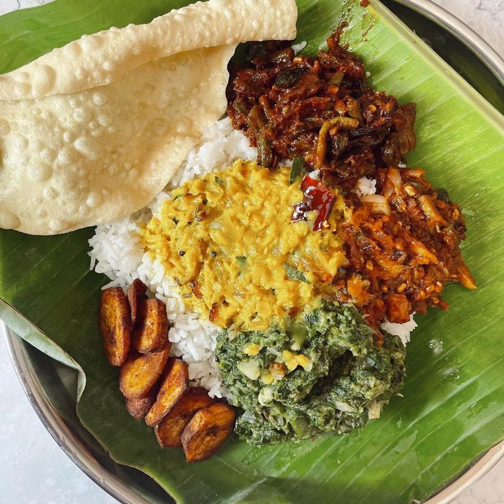
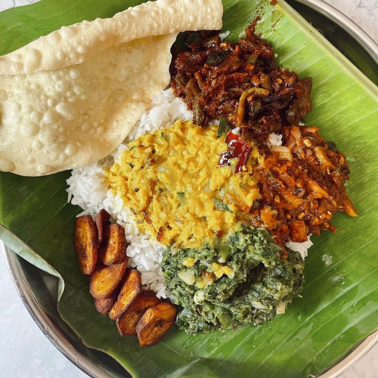

Milk Rice
Kiribath is special type of rice cooked with thick coconut milk, and is a staple dish throughout Sri Lanka. Once cooked, the mixture of rice and milk is left to set in a shallow plate. The dish is then traditionally cut into squares or diamond shapes, and served like a slice of cake.

.jpg)
 – Berrychik (1).jpg)
.jpg)
Kottu (also known as Kottu Roti)


.jpg)
A popular street food, Kottu Roti consists of chopped flatbread stir-fried with a variety of ingredients, such as vegetables, eggs, and meat, often seasoned with spices.
Sri Lankan Rice and Curry
Rice and curry is referred to as the National Dish in Sri Lanka and recipes differ depending on where you are in the country and the available ingredients. The staple food of Sri Lanka. It typically includes rice served with an array of curries, such as dhal curry, fish curry, chicken curry, and various vegetable curries.


 

String Hoppers (Indi Appa or Idiyappam)


As opposed to the Hoppers previously mentioned, String Hoppers or Iddiyappam are made from a thick dough made from rice meal or wheat flour. The dough is pressed through a string hopper maker, like a pasta press, to create thin strands of noodles. These noodles are then placed on small wicker mats in the shape of nests, and then steamed.
Hoppers (Appa or Appam)
Hoppers, a traditional Sri Lankan dish, are bowl-shaped pancakes made from fermented rice flour or a mixture of rice and coconut milk. Here are instructions for tourists on how to enjoy hoppers: Hoppers, which are also known as Appa or Appam, are an iconic Sri Lankan food and family favourite enjoyed for breakfast and dinner. Basically, Hoppers are the Sri Lankan version of a pancake.


King Coconut


When visiting Sri Lanka, be sure to try the refreshing King Coconut, a local delicacy that is both delicious and hydrating. Recognized by its bright orange hue and unique shape, the King Coconut is a favorite among tourists and locals alike. To enjoy this tropical treat, simply purchase one from a roadside vendor or local market. The vendor will skillfully chop off the top, creating a natural and convenient drinking vessel. Take a sip of the sweet, slightly nutty water inside, which is not only tasty but also packed with electrolytes, making it an excellent choice for staying hydrated in the island's warm climate. Don't forget to capture the moment as you relish this authentic Sri Lankan experience.
Special Foods in Sri Lanka You Must Try

.jpg)


.jpg)

.jpg)